James Ryan Requeima
Email: james.requeima@gmail.com
My Curriculum Vitae.
Machine Learning
I'm a PhD student studying machine learning at the University of Cambridge in the Computational and Biological Learning Lab. My advisor is Dr. Richard Turner. I'm interested in meta-learning, neural processes, approximate inference methods and Bayesian optimization.
I was recently a visiting student at MILA under the supervision of Yoshua Bengio.
Previously, I completed a Master's in machine learning, speech and language technology at the University of Cambridge where my advisor was Dr. Zoubin Ghahramani FRS.
Invenia
I’m also a researcher at Invenia Technical Computing based in Winnipeg, Manitoba. We use machine learning techniques to forecast demand for power in the electricity grid, energy production from wind farms, and electricity prices in wholesale power markets. I helped set up our research offices in Montréal, Canada and Cambridge, England.
Mathematics
At one point, I was a tenured member of the Department of Mathematics at Dawson College in Montréal. If you're looking for CEGEP-level materials and online resources, my colleagues and I maintain this website. You can also see my previously taught courses.
When studying mathematics, my specialization was geometric group theory, combinatorial group theory, and algebraic topology. I studied under Dani Wise FRS at McGill University, who was recently awarded a Guggenheim Fellowship and the Oswald Veblen Prize in Geometry.
Publications
| 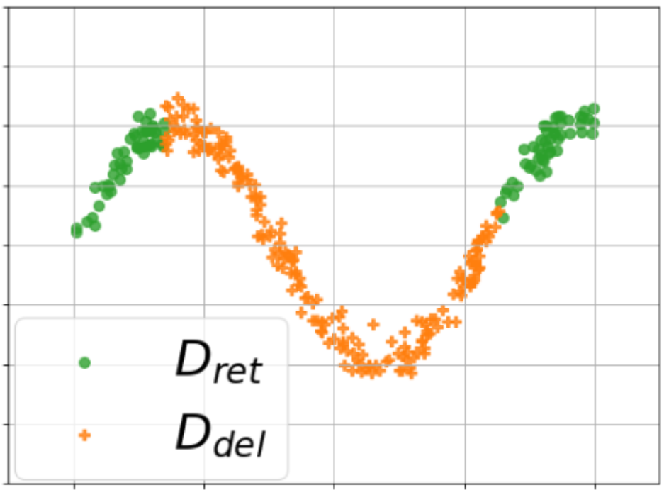 |
Challenges and Pitfalls of Bayesian Unlearning
Machine unlearning refers to the task of removing a subset of training data, thereby removing its contributions to a trained model. Approximate unlearning are one class of methods for this task which avoid the need to retrain the model from scratch on the retained data. Bayes' rule can be used to cast approximate unlearning as an inference problem where the objective is to obtain the updated posterior by dividing out the likelihood of deleted data. However this has its own set of challenges as one often doesn't have access to the exact posterior of the model parameters. In this work we examine the use of the Laplace approximation and Variational Inference to obtain the updated posterior. With a neural network trained for a regression task as the guiding example, we draw insights on the applicability of Bayesian unlearning in practical scenarios. Ambrish Rawat, James Requeima, Wessel Bruinsma, Richard E. TurnerUpdatable Machine Learning Workshop, ICML 2022. paper |
| 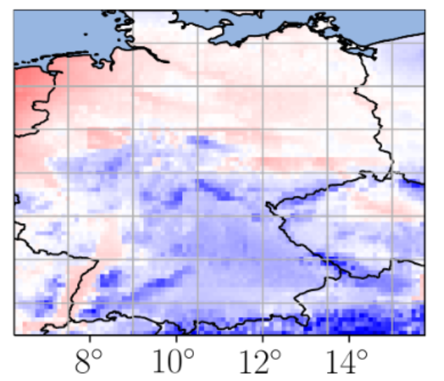 |
Practical Conditional Neural Processes Via Tractable Dependent Predictions
Conditional Neural Processes (CNPs; Garnelo et al., 2018a) are meta-learning models which leverage the flexibility of deep learning to produce well-calibrated predictions and naturally handle off-the-grid and missing data. CNPs scale to large datasets and train with ease. Due to these features, CNPs appear well-suited to tasks from environmental sciences or healthcare. Unfortunately, CNPs do not produce correlated predictions, making them fundamentally inappropriate for many estimation and decision making tasks. Predicting heat waves or floods, for example, requires modelling dependencies in temperature or precipitation over time and space. Existing approaches which model output dependencies, such as Neural Processes (NPs; Garnelo et al., 2018b) or the FullConvGNP (Bruinsma et al., 2021), are either complicated to train or prohibitively expensive. What is needed is an approach which provides dependent predictions, but is simple to train and computationally tractable. In this work, we present a new class of Neural Process models that make correlated predictions and support exact maximum likelihood training that is simple and scalable. We extend the proposed models by using invertible output transformations, to capture non-Gaussian output distributions. Our models can be used in downstream estimation tasks which require dependent function samples. By accounting for output dependencies, our models show improved predictive performance on a range of experiments with synthetic and real data. Stratis Markou*, James Requeima*, Wessel Bruinsma, Anna Vaughan, Richard E. TurnerInternational Conference on Learning Representations, 2022. paper |
| 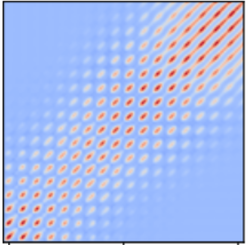 |
Efficient Gaussian Neural Processes for Regression
Conditional Neural Processes (CNP; Garnelo et al., 2018) are an attractive family of meta-learning models which produce well-calibrated predictions, enable fast inference at test time, and are trainable via a simple maximum likelihood procedure. A limitation of CNPs is their inability to model dependencies in the outputs. This significantly hurts predictive performance and renders it impossible to draw coherent function samples, which limits the applicability of CNPs in down-stream applications and decision making. Neural Processes (NPs; Garnelo et al., 2018) attempt to alleviate this issue by using latent variables, relying on these to model output dependencies, but introduces difficulties stemming from approximate inference. One recent alternative (Bruinsma et al.,2021), which we refer to as the FullConvGNP, models dependencies in the predictions while still being trainable via exact maximum-likelihood. Unfortunately, the FullConvGNP relies on expensive 2D-dimensional convolutions, which limit its applicability to only one-dimensional data. In this work, we present an alternative way to model output dependencies which also lends itself maximum likelihood training but, unlike the FullConvGNP, can be scaled to two- and three-dimensional data. The proposed models exhibit good performance in synthetic experiments. Stratis Markou*, James Requeima*, Wessel Bruinsma, Richard E. TurnerICML Uncertainty and Robustness in Deep Learning Workshop, 2021. paper |
| 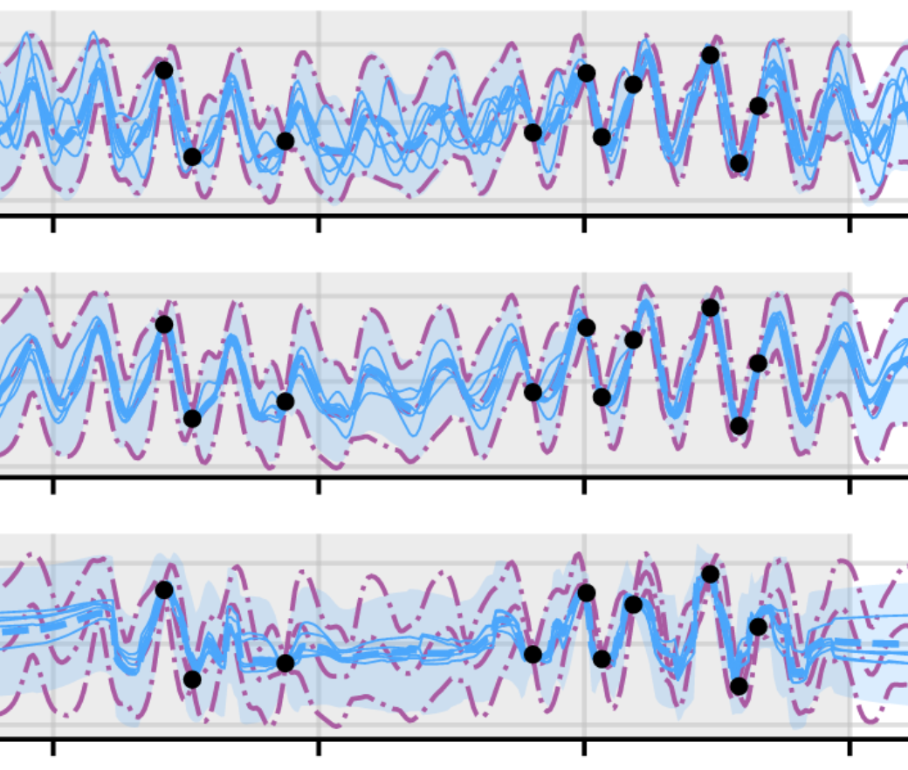 |
The Gaussian Neural Process
Neural Processes (NPs; Garnelo et al., 2018) are a rich class of models for meta-learning that map data sets directly to predictive stochastic processes. We provide a rigorous analysis of the standard maximum-likelihood objective used to train conditional NPs. Moreover, we propose a new member to the Neural Process family called the Gaussian Neural Process (GNP), which models predictive correlations, incorporates translation equivariance, provides universal approximation guarantees, and demonstrates encouraging performance. Wessel Bruinsma, James Requeima, Andrew Y. K. Foong, Jonathan Gordon, Richard E. TurnerAdvances in Approximate Bayesian Inference Symposium, 2020. paper |
| 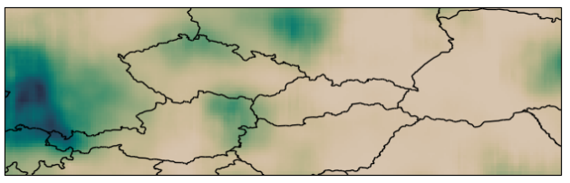 |
Meta-Learning Stationary Stochastic Process Prediction with Convolutional Neural Processes
Stationary stochastic processes (SPs) are a key component of many probabilistic models, such as those for off-the-grid spatio-temporal data. They enable the statistical symmetry of underlying physical phenomena to be leveraged, thereby aiding generalization. Prediction in such models can be viewed as a translation equivariant map from observed data sets to predictive SPs, emphasizing the intimate relationship between stationarity and equivariance. Building on this, we propose the Convolutional Neural Process (ConvNP), which endows Neural Processes (NPs) with translation equivariance and extends convolutional conditional NPs to allow for dependencies in the predictive distribution. The latter enables ConvNPs to be deployed in settings which require coherent samples, such as Thompson sampling or conditional image completion. Moreover, we propose a new maximum-likelihood objective to replace the standard ELBO objective in NPs, which conceptually simplifies the framework and empirically improves performance. We demonstrate the strong performance and generalization capabilities of ConvNPs on 1D regression, image completion, and various tasks with real-world spatio-temporal data. Andrew Y. K. Foong*, Wessel Bruinsma*, Jonathan Gordon*, Yann Dubois, James Requeima,Richard E. Turner Neural Information Processing Systems, 2020. paper |
| 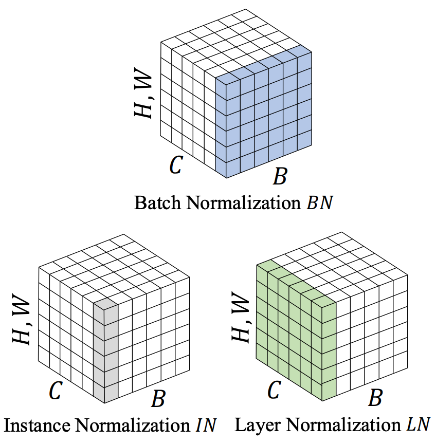 |
TaskNorm: Rethinking Batch Normalization for Meta-Learning
Modern meta-learning approaches for image classification rely on increasingly deep networks to achieve state-of-the-art performance, making batch normalization an essential component of meta-learning pipelines. However, the hierarchical nature of the meta-learning setting presents several challenges that can render conventional batch normalization ineffective, giving rise to the need to rethink normalization in this setting. We evaluate a range of approaches to batch normalization for meta-learning scenarios, and develop a novel approach that we call TaskNorm. Experiments on fourteen datasets demonstrate that the choice of batch normalization has a dramatic effect on both classification accuracy and training time for both gradient based and gradient-free meta-learning approaches. Importantly, TaskNorm is found to consistently improve performance. Finally, we provide a set of best practices for normalization that will allow fair comparison of meta-learning algorithms. John Bronskill*, Jonathan Gordon*, James Requeima, Sebastian Nowozin, Richard E. TurnerInternational Conference on Learning Representations, 2020. paper |
| 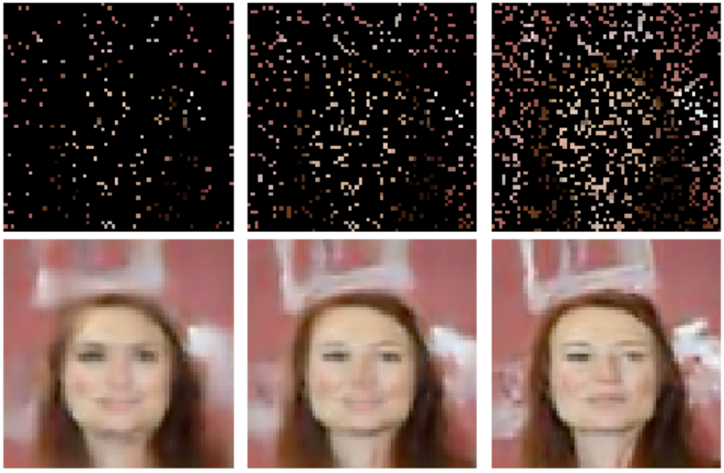 |
Convolutional Conditional Neural Processes
We introduce the Convolutional Conditional Neural Process (ConvCNP), a new member of the Neural Process family that models translation equivariance in the data. Translation equivariance is an important inductive bias for many learning problems including time series modelling, spatial data, and images. The model embeds data sets into an infinite-dimensional function space as opposed to a finite-dimensional vector space. To formalize this notion, we extend the theory of neural representations of sets to include functional representations, and demonstrate that any translation-equivariant embedding can be represented using a convolutional deep set. We evaluate ConvCNPs in several settings, demonstrating that they achieve state-of-the-art performance compared to existing NPs. We demonstrate that building in translation equivariance enables zero-shot generalization to challenging, out-of-domain tasks. Jonathan Gordon*, Wessel Bruinsma*, Andrew Y. K. Foong, James Requeima, Yann Dubois,Richard E. Turner International Conference on Learning Representations, 2020. paper |
| 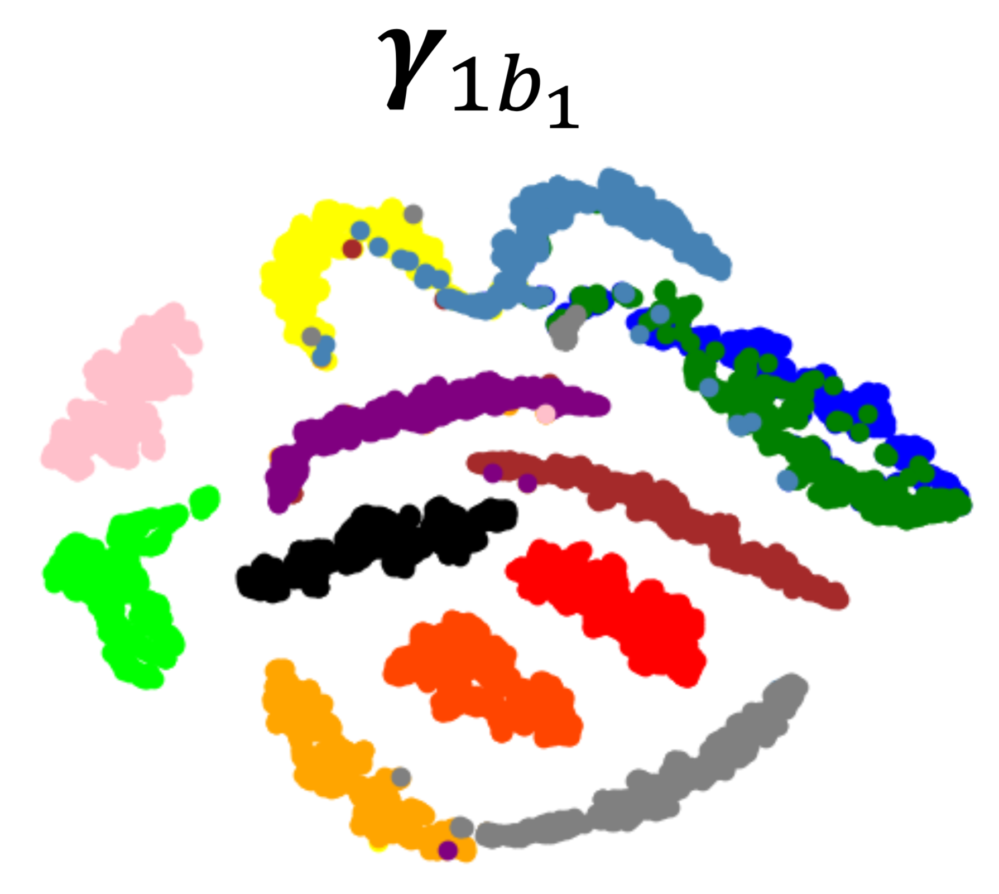 |
Fast and Flexible Multi-Task Classification Using Conditional Neural Adaptive Processes
The goal of this paper is to design image classification systems that, after an initial multi-task training phase, can automatically adapt to new tasks encountered at test time. We introduce a conditional neural process based approach to the multi-task classification setting for this purpose, and establish connections to the meta-learning and few-shot learning literature. The resulting approach, called CNAPs, comprises a classifier whose parameters are modulated by an adaptation network that takes the current task's dataset as input. We demonstrate that CNAPs achieves state-of-the-art results on the challenging Meta-Dataset benchmark indicating high-quality transfer-learning. We show that the approach is robust, avoiding both over-fitting in low-shot regimes and under-fitting in high-shot regimes. Timing experiments reveal that CNAPs is computationally efficient at test-time as it does not involve gradient based adaptation. Finally, we show that trained models are immediately deployable to continual learning and active learning where they can outperform existing approaches that do not leverage transfer learning. James Requeima*, Jonathan Gordon*, John Bronskill*, Sebastian Nowozin, Richard E. TurnerConference on Neural Information Processing Systems, spotlight paper, 2019. paper | bibtex | code |
| 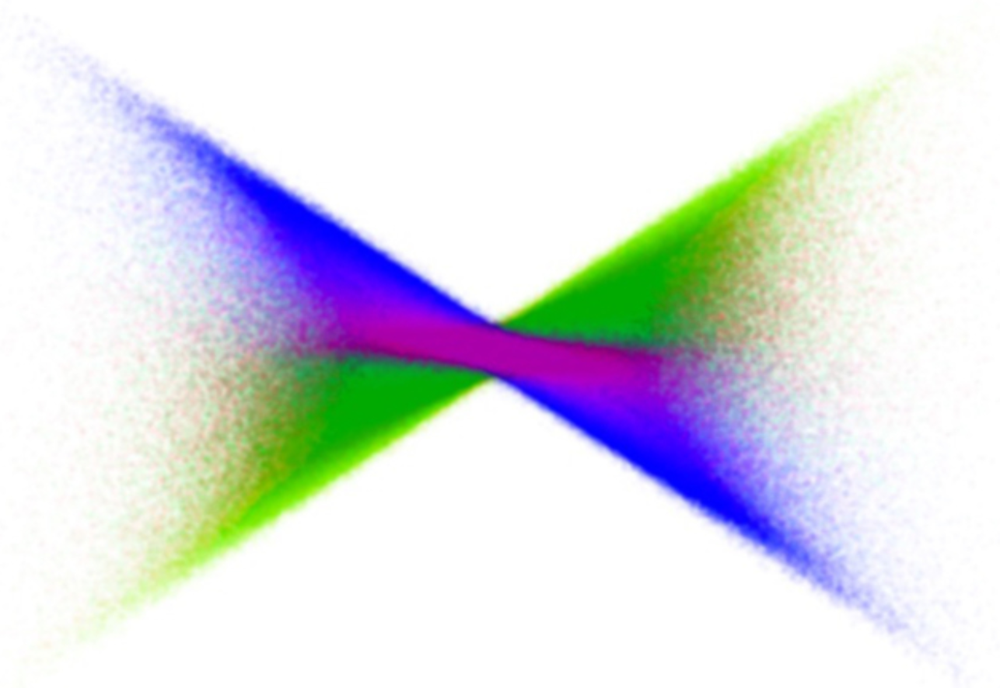 |
The Gaussian Process Autoregressive Regression Model (GPAR)
Multi-output regression models must exploit dependencies between outputs to maximise predictive performance. The application of Gaussian processes (GPs) to this setting typically yields models that are computationally demanding and have limited representational power. We present the Gaussian Process Au- toregressive Regression (GPAR) model, a scalable multi-output GP model that is able to capture nonlinear, possibly input-varying, dependencies between outputs in a simple and tractable way: the product rule is used to decompose the joint distribution over the outputs into a set of conditionals, each of which is modelled by a standard GP. GPAR’s efficacy is demonstrated on a variety of synthetic and real-world problems, outperforming existing GP models and achieving state-of-the-art performance on established benchmarks. James Requeima*, Will Tebbutt*, Wessel Bruinsma*, Richard E. TurnerInternational Conference on Artificial Intelligence and Statistics, 2019. paper | bibtex | code |
| 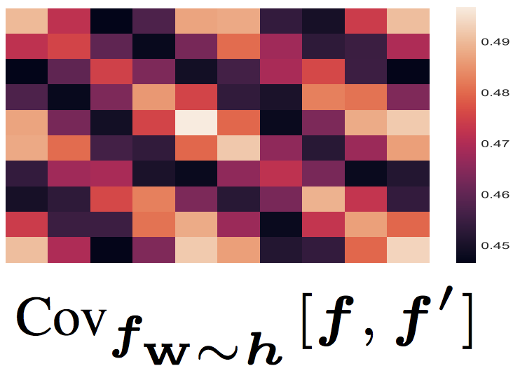 |
Characterizing and Warping the Function space of Bayesian Neural Networks
In this work we develop a simple method to construct priors for Bayesian neural networks that incorporates meaningful prior information about functions. This method allows us to characterize the relationship between weight space and function space. Daniel Flam-Shepherd, James Requeima, David Duvenaud,NeurIPS Bayesian Deep Learning Workshop, 2018. paper | bibtex |
| 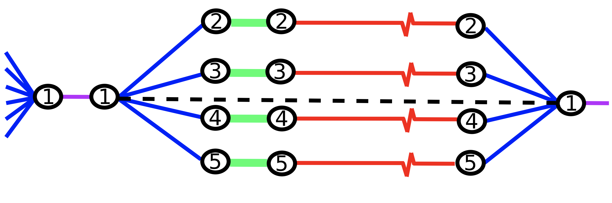 |
Parallel and distributed Thompson sampling for large-scale accelerated exploration of chemical space
Chemical space is so large that brute force searches for new interesting molecules are infeasible. High-throughput virtual screening via computer cluster simulations can speed up the discovery process by collecting very large amounts of data in parallel, e.g., up to hundreds or thousands of parallel measurements. Bayesian optimization (BO) can produce additional acceleration by sequentially identifying the most useful simulations or experiments to be performed next. However, current BO methods cannot scale to the large numbers of parallel measurements and the massive libraries of molecules currently used in high-throughput screening. Here, we propose a scalable solution based on a parallel and distributed implementation of Thompson sampling (PDTS). We show that, in small scale problems, PDTS performs similarly as parallel expected improvement (EI), a batch version of the most widely used BO heuristic. Additionally, in settings where parallel EI does not scale, PDTS outperforms other scalable baselines such as a greedy search, ϵ-greedy approaches and a random search method. These results show that PDTS is a successful solution for large-scale parallel BO. José Miguel Hernández-Lobato*, James Requeima*, Edward O. Pyzer-Knapp, Alán Aspuru-GuzikInternational Conference on Machine Learning, 2017. paper | bibtex |
| 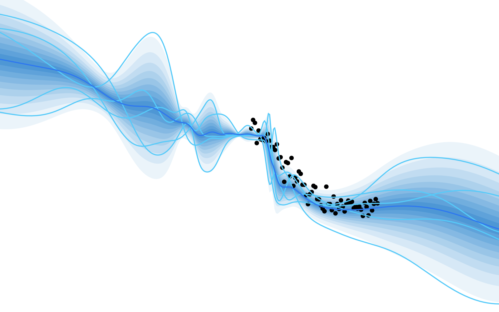 |
Mapping Gaussian Process Priors to Bayesian Neural Networks
Currently, BNN priors are specified over network parameters with little thought given to the distributions over functions that are implied. What do N(0, 1) parameter priors look like in function space and is this a reasonable assumption? We should be thinking about priors over functions and that network architecture should be an approximation strategy for these priors. Gaussian Processes offer an elegant mechanism in the kernel to specify properties we believe our underlying function has. In this work we propose a method to, using a BNN, approximate the distribution over functions given by a GP prior. Daniel Flam-Shepherd, James Requeima, David Duvenaud,NIPS Bayesian Deep Learning Workshop, 2017. paper | bibtex |
|
Master's Thesis: Integrated Predictive Entropy Search for Bayesian Optimization
Predictive Entropy Search (PES) is an information-theoretic based acquisition function that has been demonstrated to perform well on several applications. PES harnesses our estimate of the uncertainty in our objective to recommend query points that maximize the amount of information gained about the local maximizer. It cannot, however, harness the potential information gained in our objective model hyperparameters for better recommendations. This dissertation introduces a modification to the Predictive Entropy Search acquisition function called Integrated Predictive Entropy Search (IPES) that uses a fully Bayesian treatment of our objective model hyperparameters. The IPES aquisition function is the same as the original PES aquision function except that the hyperparameters have been marginalized out of the predictive distribution and so it is able to recommend points taking into account the uncertainty and reduction in uncertainty in the hyperparameters. It can recommend queries that yield more information about the local maximizer through information gained about hyperparameters values. James Requeima, Advisor: Zoubin Ghahramanipaper | bibtex | code |
|
| 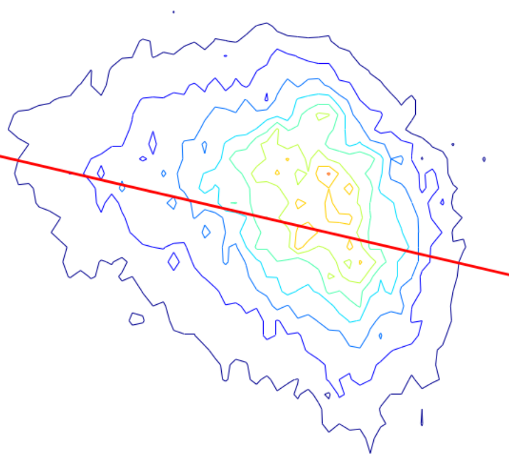 |
Multi-scaling of wholesale electricity prices
We empirically analyze the most volatile component of the electricity price time series from two North-American wholesale electricity markets. We show that these time series exhibit fluctuations which are not described by a Brownian Motion, as they show multi-scaling, high Hurst exponents and sharp price movements. We use the generalized Hurst exponent (GHE, H(q)) to show that although these time-series have strong cyclical components, the fluctuations exhibit persistent behaviour, i.e., H(q)>0.5. We investigate the effectiveness of the GHE as a predictive tool in a simple linear forecasting model, and study the forecast error as a function of H(q), with q=1 and q=2. Our results suggest that the GHE can be used as prediction tool for these time series when the Hurst exponent is dynamically evaluated on rolling time windows of size ≈50−100 hours. These results are also compared to the case in which the cyclical components have been subtracted from the time series, showing the importance of cyclicality in the prediction power of the Hurst exponent. Francesco Caravelli, James Requeima, Cozmin Ududec,arXiv e-print. paper | bibtex |
|
Master's Thesis: Relative sectional curvature in compact angled 2-complexes
We define the notion of relative sectional curvature for 2-complexes, and prove that a compact angled 2-complex that has negative sectional curvature relative to planar sections has coherent fundamental group. We analyze a certain type of 1-complex that we call flattenable graphs Γ → X for an compact angled 2-complex X, and show that if X has nonpositive sectional curvature, and if for every flattenable graph π1(Γ) → π1(X) is finitely presented, then X has coherent fundamental group. Finally we show that if X is a compact angled 2-complex with negative sectional curvature relative to π-gons and planar sections then π1(X) is coherent. Some results are provided which are useful for creating examples of 2-complexes with these properties, or to test a 2-complex for these properties. James Requeima, Advisor: Daniel Wisepaper | bibtex |